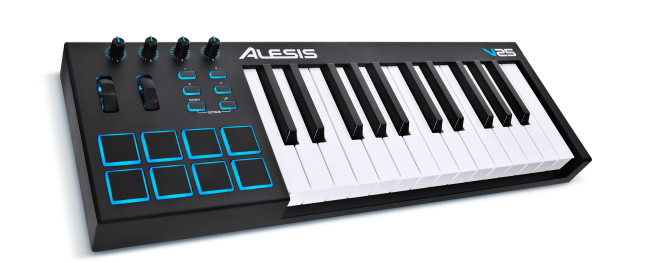
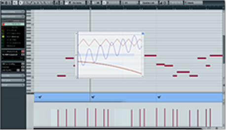
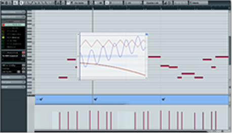

contrôleur MIDI-USB
à base d'arduino

1983 : un protocole
- musical
- unifié
- numérique
1985 : Atari ST: le séquenceur MIDI
un matériel spécifique

2020 : contrôleurs MIDI USB

2020 : séquenceurs MIDI USB
 

contrôleurs DIY
installation de l'IDE arduino
- à télécharger sur arduino.cc
- installation de la bibliothèque midiUSB :
croquis -> inclure une bibliothèque -> gérer les bibliothèques ->chercher "MIDIUSB" -> installer
tous les arduinos ne permettent pas le MIDI-USB
micro, leonardo : USB host
constitué de messages :
- type : note on | note off | control change
- valeur : de 0 à 127 , représente la note ou le numéro du CC
- vélocité : de 0 à 127
- canal : de 1 à 16 (ou omni)
exemple
type : noteON, valeur: 60, vélocité : 127, canal : 1
joue la note C4 à plein volume sur le canal 1
la valeur des messages note ON/OFF représente au total plus de 10 octaves, par demi-ton
il existe aussi 128 control change, certains sont assignés par défaut
CC#7 = volume, CC#10 = panoramique...
un code dérivé de l'exemple
#include "MIDIUSB.h"
#define CHANNEL 0x1
#define DEADBAND 5 // 0~1023
#define MIDI_NOTE 60
#define CC_NUMBER 10
static const int buttonPin = 3;
static const int potentiometerPin = A0;
bool buttonLastState = true;
int potCurrentValue = 0;
int potLastValue = 0;
void noteOn(byte pitch, byte velocity) {
midiEventPacket_t noteOn = {0x09, 0x90 | CHANNEL, pitch, velocity};
MidiUSB.sendMIDI(noteOn);
}
void noteOff(byte pitch) {
midiEventPacket_t noteOff = {0x08, 0x80 | CHANNEL, pitch, 0x0};
MidiUSB.sendMIDI(noteOff);
}
void controlChange(byte control, byte value) {
midiEventPacket_t event = {0x0B, 0xB0 | CHANNEL, control, value};
MidiUSB.sendMIDI(event);
}
void setup() {
// setting up the digital inputs
pinMode(buttonPin, INPUT_PULLUP);
buttonLastState = digitalRead(buttonPin);
// setting up the analog inputs
potCurrentValue = map(analogRead(potentiometerPin), 0, 1023, 0, 127);
}
void loop() {
// Reading analog inputs
potCurrentValue = map(analogRead(potentiometerPin), 0, 1023, 0, 127);
if (potLastValue < potCurrentValue - DEADBAND || potLastValue > potCurrentValue + DEADBAND) {
byte ccValue = potCurrentValue;
controlChange(CC_NUMBER, ccValue);
delay(2);
}
potLastValue = potCurrentValue;
// Reading digital inputs
bool currentState = digitalRead(buttonPin);
// input has been pulled LOW
if (currentState == LOW && buttonLastState == HIGH) {
noteOn((byte) MIDI_NOTE, (byte) 127);
delay(2);
}
// input has been pulled HIGH
if (currentState == HIGH && buttonLastState == LOW) {
noteOff((byte) MIDI_NOTE);
delay(2);
}
buttonLastState = currentState;
MidiUSB.flush();
delay(5);
}
pour aller plus loin
code de l'INIT
code de nos projets
l'incontournable wiki